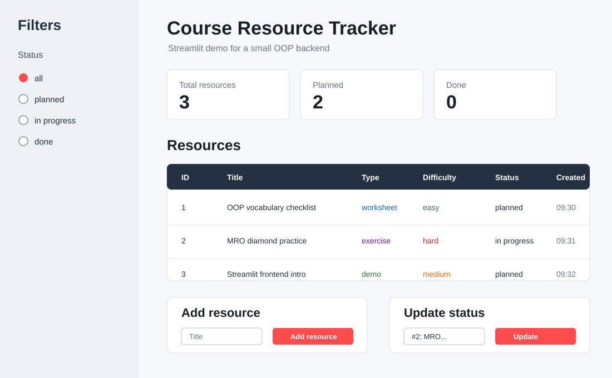
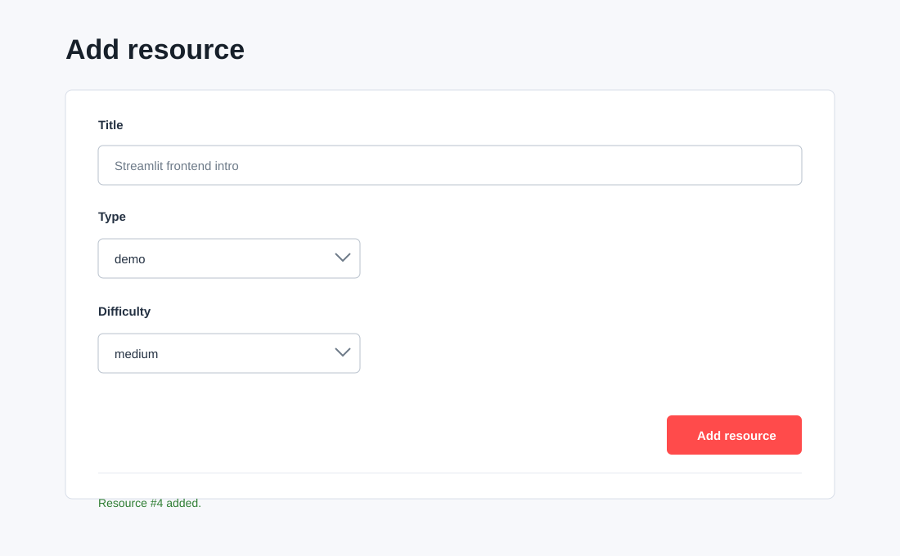

Streamlit-Einführung: Frontend für Python-Backends
Streamlit ist ein Python-Framework, mit dem aus einem Python-Skript schnell
eine kleine Weboberfläche entsteht. Für OOP-Projekte ist Streamlit interessant,
weil das Backend weiter aus normalen Python-Klassen bestehen kann. Das Frontend
ruft nur Methoden auf und zeigt Rückgabewerte an.
Installation
In einer aktivierten virtuellen Umgebung:
Installation testen:
Eigene App starten:
| streamlit run resource_tracker_app.py
|
Wichtig
Streamlit-Dateien werden nicht mit python app.py gestartet, sondern mit
streamlit run app.py.
Grundidee
Eine Streamlit-App ist ein Python-Skript, das bei jeder Interaktion neu von oben
nach unten ausgeführt wird.
Typischer Aufbau:
| import streamlit as st
st.set_page_config(page_title="Course Resource Tracker", layout="wide")
st.title("Course Resource Tracker")
st.write("Inhalte anzeigen")
if st.button("Aktion ausführen"):
st.success("Aktion wurde ausgeführt")
|
Für Werte, die zwischen Interaktionen erhalten bleiben sollen, nutzt man
st.session_state.
Wichtige Elemente
| Element |
Typischer Zweck |
st.title() / st.header() |
klare Seitenstruktur |
st.write() / st.markdown() |
Text, Hinweise, Rückgaben anzeigen |
st.dataframe() |
Objektliste als Tabelle anzeigen |
st.form() |
Objekt anlegen, ohne bei jedem Feld neu zu reagieren |
st.text_input() |
Titel, Autor, Suchfeld |
st.text_area() |
längere Texte wie Beschreibung oder Kommentar |
st.selectbox() |
Status, Priorität, Typ oder Kategorie |
st.radio() |
Filter oder Modus wählen |
st.button() |
Aktion auslösen |
st.columns() |
Oberfläche in Bereiche aufteilen |
st.sidebar |
Filter und Navigation |
st.success() / st.warning() / st.error() |
Feedback nach Aktionen |
st.session_state |
Objekte während der Session speichern |
Hier findest du weitere Elemente und Informationen:
https://docs.streamlit.io/develop/api-reference
Warum das gut zu OOP-Backends passt
Das Backend sollte weiterhin keine Streamlit-Abhängigkeit besitzen.
Gut:
| resource = tracker.add_resource(title, resource_type, difficulty)
rows = tracker.list_resources()
|
Nicht ideal:
| class ResourceTracker:
def add_resource(self):
title = st.text_input("Titel")
|
Die Streamlit-App ist nur die Oberfläche. Die Klassen bleiben unabhängig und
können später auch mit CLI, Flask, Tests oder einer anderen UI benutzt werden.
Mock-Screenshots
Übersicht mit Ressourcenliste, Filter und Kennzahlen:

Formular zum Anlegen einer Ressource:

Beispiel-App
Der folgende Code kann als Datei resource_tracker_app.py gespeichert und mit
Streamlit gestartet werden. Die App zeigt eine kleine Streamlit-Oberfläche mit:
- Ressourcenliste
- Filter in der Sidebar
- Formular zum Anlegen neuer Ressourcen
- Statusänderung
- Status einer Ressource ändern
st.session_state als einfacher Speicher- klarer Trennung zwischen Mini-Backend und UI-Code
Die App ist bewusst nicht das Projekt selbst. Sie zeigt nur dieselben
Frontend-Muster, die später für ein größeres Backend nützlich sind.
Gesamter Beispielcode
Dateiname:
1
2
3
4
5
6
7
8
9
10
11
12
13
14
15
16
17
18
19
20
21
22
23
24
25
26
27
28
29
30
31
32
33
34
35
36
37
38
39
40
41
42
43
44
45
46
47
48
49
50
51
52
53
54
55
56
57
58
59
60
61
62
63
64
65
66
67
68
69
70
71
72
73
74
75
76
77
78
79
80
81
82
83
84
85
86
87
88
89
90
91
92
93
94
95
96
97
98
99
100
101
102
103
104
105
106
107
108
109
110
111
112
113
114
115
116
117
118
119
120
121
122
123
124
125
126
127
128
129
130
131
132
133
134
135
136
137
138
139
140
141
142
143
144
145
146
147
148
149
150 | from datetime import datetime
import streamlit as st
class LearningResource:
def __init__(self, resource_id: int, title: str, resource_type: str, difficulty: str) -> None:
self.resource_id = resource_id
self.title = title
self.resource_type = resource_type
self.difficulty = difficulty
self.status = "planned"
self.created_at = datetime.now().strftime("%H:%M")
def change_status(self, new_status: str) -> None:
self.status = new_status
def to_row(self) -> dict:
return {
"ID": self.resource_id,
"Title": self.title,
"Type": self.resource_type,
"Difficulty": self.difficulty,
"Status": self.status,
"Created": self.created_at,
}
class ResourceTracker:
def __init__(self) -> None:
self.resources: list[LearningResource] = []
self.next_id = 1
def add_resource(self, title: str, resource_type: str, difficulty: str) -> LearningResource:
resource = LearningResource(
resource_id=self.next_id,
title=title,
resource_type=resource_type,
difficulty=difficulty,
)
self.resources.append(resource)
self.next_id += 1
return resource
def list_resources(self, status_filter: str = "all") -> list[LearningResource]:
if status_filter == "all":
return self.resources
return [resource for resource in self.resources if resource.status == status_filter]
def find_resource(self, resource_id: int) -> LearningResource | None:
for resource in self.resources:
if resource.resource_id == resource_id:
return resource
return None
def seed_demo_data(tracker: ResourceTracker) -> None:
tracker.add_resource("OOP vocabulary checklist", "worksheet", "easy")
mro = tracker.add_resource("MRO diamond practice", "exercise", "hard")
mro.change_status("in progress")
tracker.add_resource("Streamlit frontend intro", "demo", "medium")
def get_tracker() -> ResourceTracker:
if "resource_tracker" not in st.session_state:
st.session_state.resource_tracker = ResourceTracker()
seed_demo_data(st.session_state.resource_tracker)
return st.session_state.resource_tracker
st.set_page_config(page_title="Course Resource Tracker", layout="wide")
tracker = get_tracker()
st.title("Course Resource Tracker")
st.caption("Streamlit demo for a small OOP backend")
with st.sidebar:
st.header("Filters")
status_filter = st.radio(
"Status",
["all", "planned", "in progress", "done"],
index=0,
)
st.divider()
st.write("The same pattern can later filter records, users or priorities.")
visible_resources = tracker.list_resources(status_filter)
total_count = len(tracker.resources)
planned_count = len(tracker.list_resources("planned"))
done_count = len(tracker.list_resources("done"))
metric_left, metric_middle, metric_right = st.columns(3)
metric_left.metric("Total resources", total_count)
metric_middle.metric("Planned", planned_count)
metric_right.metric("Done", done_count)
st.header("Resources")
if visible_resources:
st.dataframe(
[resource.to_row() for resource in visible_resources],
hide_index=True,
use_container_width=True,
)
else:
st.info("No resources match the current filter.")
left, right = st.columns(2)
with left:
st.header("Add resource")
with st.form("add-resource-form", clear_on_submit=True):
title = st.text_input("Title")
resource_type = st.selectbox("Type", ["demo", "exercise", "reading", "worksheet"])
difficulty = st.selectbox("Difficulty", ["easy", "medium", "hard"])
submitted = st.form_submit_button("Add resource")
if submitted:
if not title.strip():
st.error("Title is required.")
else:
created = tracker.add_resource(title.strip(), resource_type, difficulty)
st.success(f"Resource #{created.resource_id} added.")
with right:
st.header("Update status")
resource_options = {
f"#{resource.resource_id}: {resource.title}": resource.resource_id
for resource in tracker.resources
}
if resource_options:
selected_label = st.selectbox("Select resource", list(resource_options))
selected_resource = tracker.find_resource(resource_options[selected_label])
if selected_resource:
new_status = st.selectbox(
"New status",
["planned", "in progress", "done"],
index=["planned", "in progress", "done"].index(selected_resource.status),
)
if st.button("Update status"):
selected_resource.change_status(new_status)
st.success("Status updated.")
else:
st.info("Add a resource first.")
|
Mini-Aufgabe
Erweitere die Beispiel-App um eine dieser Funktionen:
- Filter nach Schwierigkeit
- Button, der eine Ressource direkt auf
done setzt
- Detailansicht für die ausgewählte Ressource
- Export der Ressourcenliste als JSON-String mit
st.download_button()
Quellen